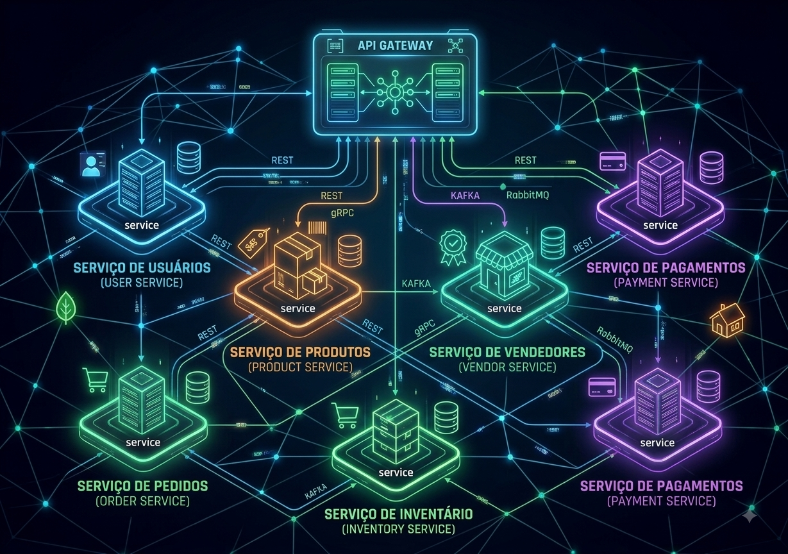

Rapid Food MS
Java · Spring Boot · MySQL · KafkaO Rapid Food MS é uma api REST desenvolvida em Java com Spring, a aplicação gerencia usuários, vendedores, produtos, pedidos e pagamentos. A arquitetura inicial era um projeto monorepo, refatorado agora para microserviços, a comunicação entre serviços ocorre de duas formas: sincrona usando OpenFeign, e assincrona através de eventos com Kafka.